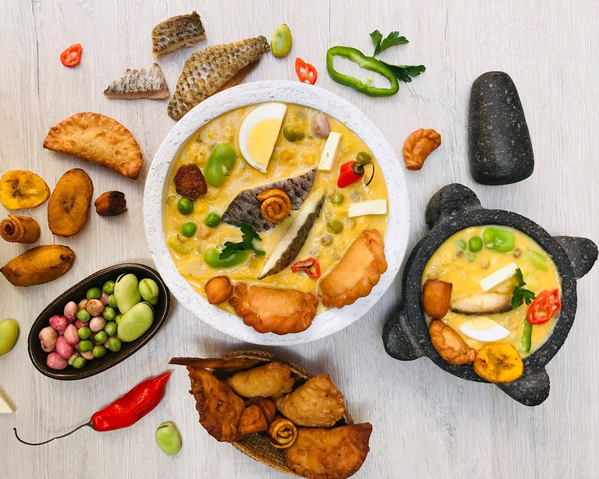
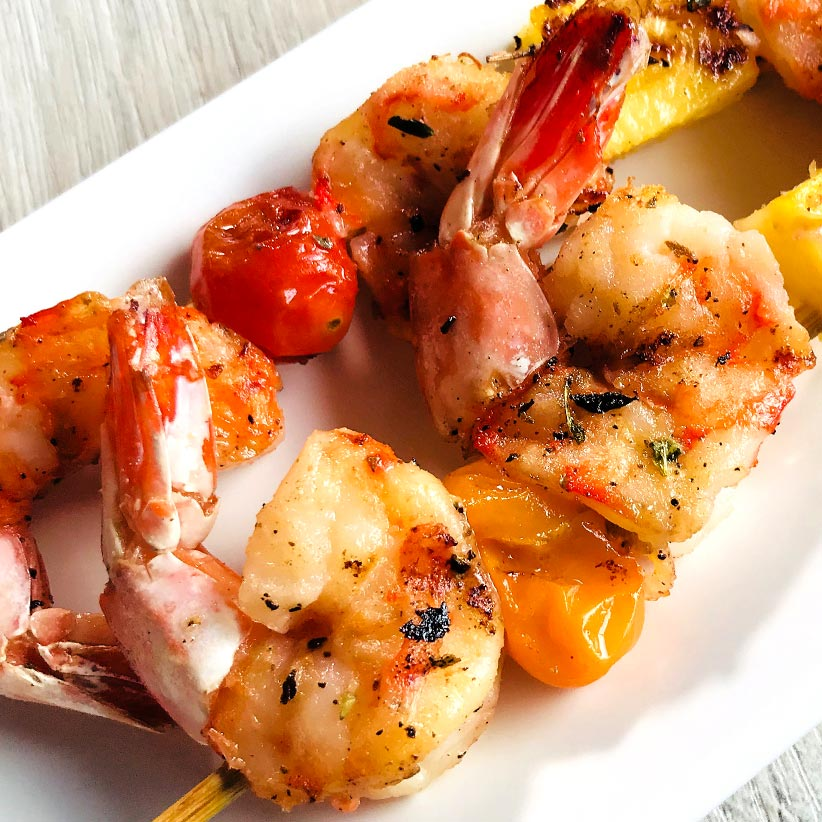

19 de abril 2019

Sin duda la Fanesca es un potaje emblemático de la cultura culinaria ecuatoriana, donde la tradición, legado y formas de prepararla se transmiten de generación en generación.
Ya es costumbre en el Ecuador que el Viernes Santo, se reúnan las familias para la elaboración de este complejo plato, donde anécdotas, risas y la develación de algún secreto marquen la jornada culinaria en cada hogar.
Desalar el bacalao una noche anterior, cocinar los granos, licuar el maní con la leche, hacer el refrito, son una parte en la cadena productiva de la Fanesca...

Maria23: Que gran Post, aprendí mucho sonbre la fanesca.

JuanF: Tengo una pregunta, me gustaría a que temperatura debemos cocinar la fanezca.
Chef_78: Me gustó mucho la forma como se rescata las tradiciones en Ecuador.
19 de abril 2019

Una forma distinta de comer proteínas, son las brochetas o pinchos, mismo que los puedes hacer a la parrilla, plancha o al horno. Sorprende a tus invitados con esta deliciosa propuesta....
PedroRss2: Lo pondré en práctica.